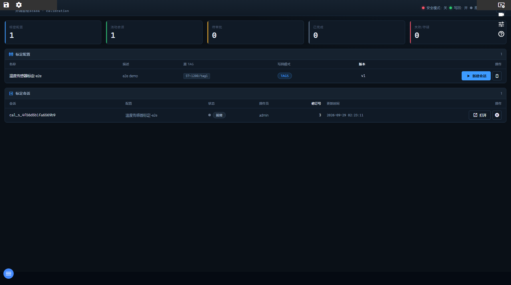

15. 标定工作台
入口：顶部工具条「标定」或 /calibrations
功能概述
标定模块按闭环流程管理传感器校准：建会话 → 采样 → 拟合 → 提交审批 → 审批 → 回读校验 → 应用，全过程留审计记录。
界面说明

标定工作台（当前交付版实际截图）
界面上真实可见的元素（按当前交付版实测）
| 区域 | 实际内容 |
|---|
| 按钮 / 图标 | 保存项目、编辑项目、视频墙、视频监控、传感器标定、开诚智枢帮助、刷新、play_arrow新建会话、删除、open_in_new打开、取消会话 |
| 列表表头 | 名称、描述、源 Tag、写回模式、版本、操作、会话、配置、状态、操作员、修订号、更新时间 |
| 当前列表行数 | 2 行（真实数据，截图同版） |
逐步操作
- 进标定页，选择已有标定配置或新建会话。
- 按提示采集若干标定点（自动或手工采点）。
- 点“拟合”得到系数与质量指标（残差、R² 等）。
- 提交审批，由有权限者批准。
- 确认应用时回读校验，成功后写入设备；失败则按提示排查。
常见问题
- **写入被拒（403 CAL_SECURITY_DISABLED）？这是平台既定姿态：安全关闭时不接受写入操作。** 要完成应用需启用安全（secureEnabled=true）并以管理员登录。
- 读页面正常但按钮无效？同上，先确认安全与权限。
- 审计记录在哪？会话详情里有完整操作与结果列表。
返回目录